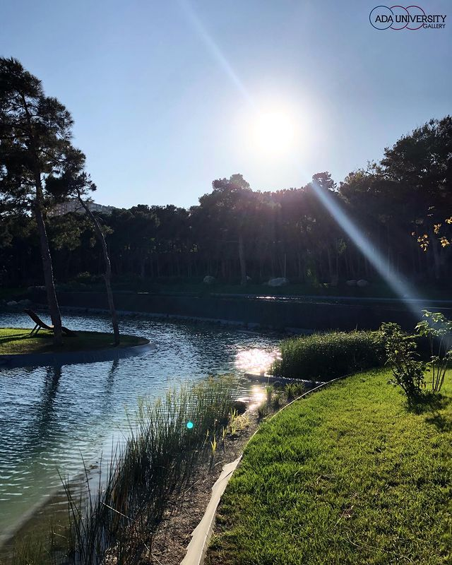
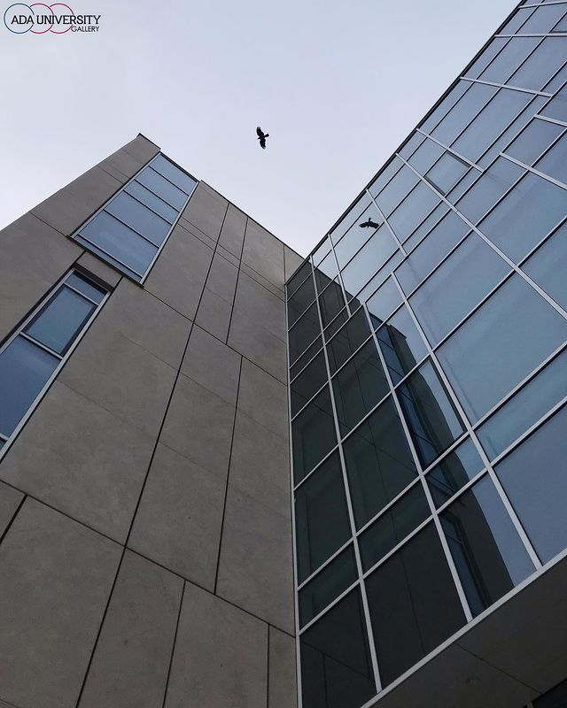
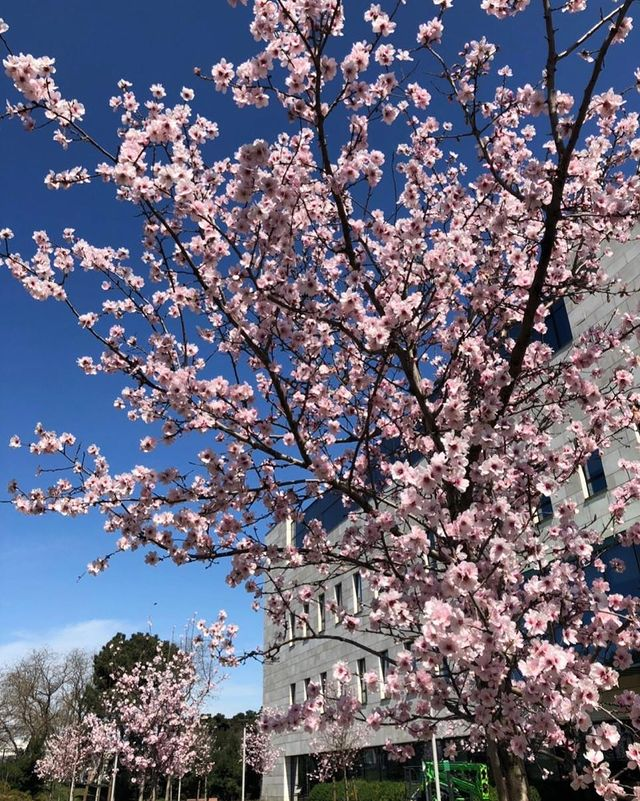
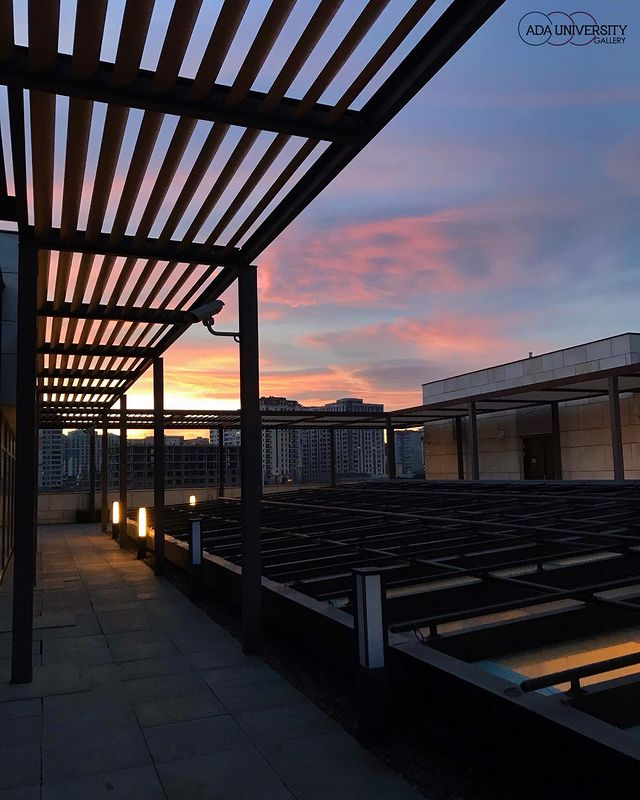
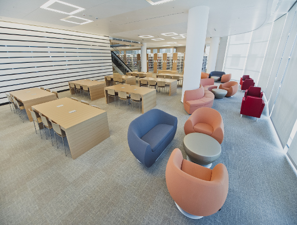
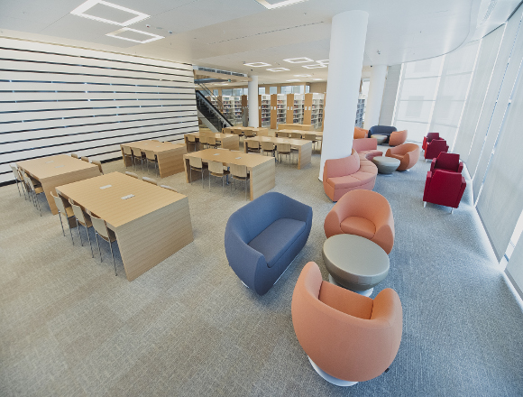

Home
Home Our Projects
Our Projects ADA
ADA Contact Us
Contact Us
ADA UNIVERSITY
World Class University in Azerbaijan
ADA University
ADA University was established under the decree dated January 13th, 2014, by the President of the Republic of Azerbaijan. The University is a state higher education institution engaged in the delivery of undergraduate and graduate degree programs in addition to the advancement of research. The University is the legal heir of the Azerbaijan Diplomatic Academy (ADA) and Information Technologies University. They were merged in January 2014 to establish ADA University. Founded on March 6, 2006, the Azerbaijan Diplomatic Academy began offering an Advanced Foreign Service Program to diplomats of the Ministry of Foreign Affairs and civil servants in the government, as of January 2007. The Academy launched its first master degree in September 2009, followed by bachelor degrees in September 2011.
| Core Values | Schools |
|---|---|
| Academic Excellence | School of Public and International Affairs |
| Accountability and shared governance | School of Business |
| Honor, integrity and transparency | School of Education |
| Diversity, collaboration and communication | School of IT and Engineering |
| Social responsibility |
| Students | Alumni |
|---|---|
| 2558 students | 4442 alumni of ADA Ececutive Education |
| 13% graduate | |
| 48% men | |
| 52% women |
 
| Mission | Vission |
|---|---|
| Our mission is to cultivate highly intellectual solution providers who are closely collaborating, efficiently communicating members of the global community, possessing ethics and a sense of citizenship. | We continually strive to be a world-class university in Azerbaijan with the excellence of “müəllim and alim” embedded into an innovative learning culture. |
Diversity
With students, faculty, and staff from 46 countries around the world, diversity illustrates one of our core values. International representation creates a stimulating environment and learning happens everywhere around us.
Statement of Common Purpose:
ADA University was established under the decree dated January 13th, 2014, by the President of the Republic of Azerbaijan. The University is a state higher education institution engaged in the delivery of undergraduate and graduate degree programs in addition to the advancement of research. The University is the legal heir of the Azerbaijan Diplomatic Academy (ADA) and Information Technologies University. They were merged in January 2014 to establish ADA University. Founded on March 6, 2006, the Azerbaijan Diplomatic Academy began offering an Advanced Foreign Service Program to diplomats of the Ministry of Foreign Affairs and civil servants in the government, as of January 2007. The Academy launched its first master degree in September 2009, followed by bachelor degrees in September 2011.
 
Library
The most substantial foreign language collection in Azerbaijan, ADA's is both a digital and physical library with a total capacity of 120,000 volumes. It houses classrooms for teaching, group study rooms for collaboration,study carrels for individual work, lounges and a coffee shop to foster learning through living and experiencing.
 

Location
Baku and ADA University are both a living laboratory at the crossroads of the ancient Silk Road, where East meets West. Conveniently located in central Baku, ADA University was conceptualized as “From Exchange of Goods to Exchange of Ideas”. In this thriving, cosmopolitan city and university, students feel they are part of a groundbreaking, transformational change in Azerbaijan as ADA University quickly becomes a new element in national identity and on the international map. ADA thrives in concert with this capital city of Azerbaijan.
Anthem
The anthem of ADA University is a reflection of the University’s core values. It symbolizes the identity of the ADA community of students, faculty and staff alike. The lyrics of the anthem were penned by Elnur Imanbayli, BAIS Class of 2016, and the music was composed by the renowned Azerbaijani composer Firangiz Alizadeh. The anthem was first presented on May 2, 2013, at the ceremony marking our annual “Citizenship and Social Responsibility Day”.
Read More